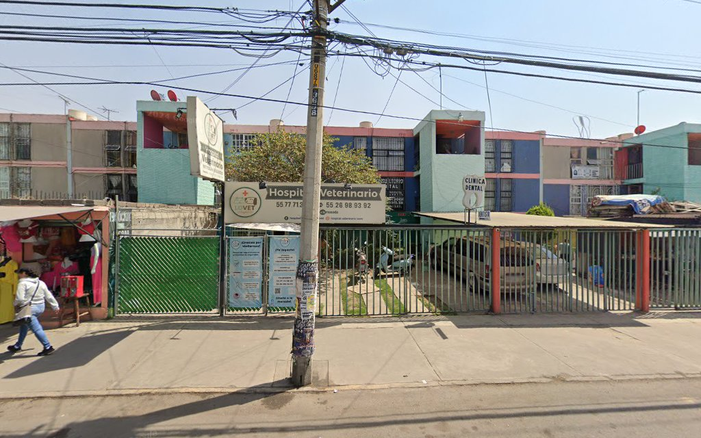

Instalaciones y Equipamiento
Conoce Hospital Veterinario LOVET
Instalaciones preparadas en Los Héroes Ixtapaluca para recibir consultas programadas y emergencias las 24 horas.
Fotografía Real • Hospital
Hospital Veterinario LOVET
Atención médica integral 24 horas en Los Héroes, Ixtapaluca.

Ubicación • Los Héroes
Acceso Rápido de Urgencias
Independencia Mz 26 Lt 28 Dp 1, C.P. 56585, Ixtapaluca.

Tecnología Médica
Quirófano e Imagenología
Rayos X, ultrasonido, laboratorio clínico y cirugía especializada.

Atención Felina
Ambiente Seguro para Gatos
Consulta especializada libre de estrés para pacientes felinos.